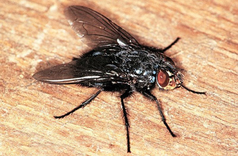
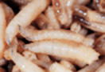
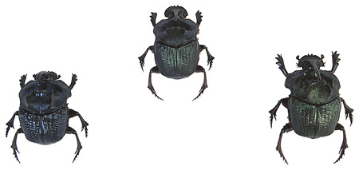

Photograph of a Blowfly

When insects invade human remains, they begin to feed on blood or exposed flesh on the body surface. Regardless of the environment or climate, the most common type of insect to first infest a corpse are blowflies and/or flesh flies. Blowflies and flesh flies play the most dominant role in the decomposition of dead bodies. Usually within moments of their arrival, the female flies begin to lay their eggs in enclosed, moist areas such as open wounds or body openings such as the nose, eyes, ears, mouth, anus, penis, and vagina.
After one to two days, depending on the fly species, the eggs hatch into small larvae. Blowfly larvae are white, have a worm-like shape, and are commonly called maggots. Maggots grow quickly. In two to five days, they can grow from 5 mm to 17 mm in length. During this time of rapid growth, maggots very actively feed on dead tissue. After the maggots go through three larval stages, which take 5 to 7 days, they change into dark-coloured pupae.
Blowfly Maggots

Pupae continue to feed on the remains by moving around the body to find more dead tissue to consume. After this active feeding period, the pupae leave the body to find a safe place to shed their outer pupal cases (moult) and become mature flies . This change from pupae to mature flies occurs in a predictable period and is similar to the metamorphosis of caterpillars into butterflies. After a total of approximately 20 to 26 days, the majority of flies leave the body because little flesh remains to feed upon, there competition from other invading insects has increased, and the body has begun to dry due to a decrease in body fluids. Therefore, if no flies are found upon a dead body, but empty pupal cases are found, the person in question has likely been dead longer than 3 weeks. However, the exact time depends on the fly species and the temperature of the surroundings. Warmer temperatures cause faster egg and pupae maturation.
Photograph of Various Beetles

After blowflies and/or flesh flies have left dead remains, usually various types of beetle species are the dominant types of insects found on a corpse. Beetles tend to feed upon mummified tissue. Mummified tissue includes cartilage and other body parts that contain little or no blood or body fluids. The types of beetles that colonize a dead body depend on the geographic area in which it has been left. If the body is left undisturbed and the weather conditions are favourable, beetles will feed upon the body until only the skeleton remains.
High dosages of the illegal drug, cocaine, have been found to accelerate the development of some blowfly species while the presence of amitriptyline, an antidepressant, can slow the development of other blowfly species.